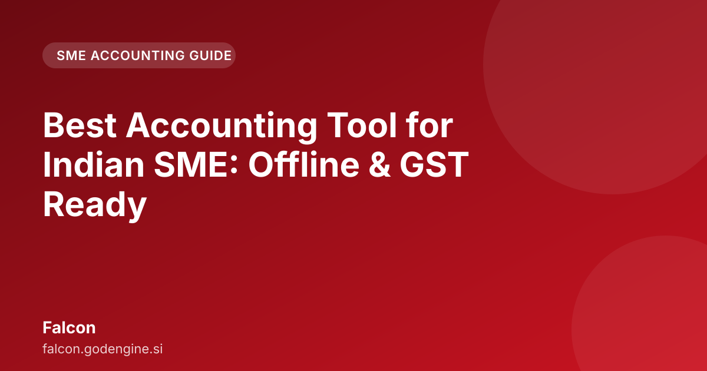

Best Accounting Tool for Indian SME: Offline & GST Ready

If you are looking for the best accounting tool for indian sme, you must look beyond the limitations of traditional cloud-based software. For Indian small and medium enterprises, the need for reliable, offline functionality combined with strict adherence to GST and double-entry principles is a necessity.
Why Traditional Cloud Accounting Fails Indian SMEs
Many businesses rely on cloud-based accounting software. While convenient for certain operations, this model presents hurdles for the typical Indian SME.
The Internet Dependency Trap
In India, internet connectivity is not always guaranteed, especially for businesses operating in smaller towns or during power fluctuations. If accounting software requires a constant, stable cloud connection to function, daily operations, invoicing, and expense tracking can halt when the internet drops. This dependency causes workflow disruptions.
Data Sovereignty and Security Concerns
For many business owners, keeping sensitive financial data on a remote server managed by a third party is a concern. Data sovereignty—knowing exactly where your business records reside—is a growing consideration. Cloud solutions mean data is subject to the policies and uptime of a distant server, which can create anxiety for small business owners.
High Subscription Costs and Complexity
Many international cloud solutions are priced for large enterprises. Features not needed by a small shop or budding service provider are often bundled into expensive tiers. Furthermore, these tools often require deep technical knowledge to configure correctly for Indian tax laws.
What Makes a 'Best' Accounting Tool for Indian Businesses?
Finding the best accounting tool for indian sme requires a specific checklist that goes beyond just having an interface. It needs to be built around the realities of the Indian business environment.
Offline Capability is Non-Negotiable
The software must function perfectly on a local machine, even without an active internet connection. You should be able to create an invoice, record a payment, and manage your ledger entry while offline. Synchronization must happen seamlessly when connectivity is restored.
Strict Adherence to Indian Tax Laws
The tool must inherently understand Indian compliance. This means it needs to handle the nuances of GST—Input Tax Credit (ITC), Output Tax, and filing requirements—without requiring manual calculation of every tax component.
Support for Double-Entry Bookkeeping
At its core, good accounting is double-entry bookkeeping. This system ensures that for every transaction, there is a corresponding debit and credit entry, maintaining the accuracy of financial statements. The software must enforce this principle automatically, reducing human error.
Scalability for Growth
The tool should start simple enough for a sole proprietor but be robust enough to handle the complexity of a growing team, multiple branches, or advanced inventory management later on.
The Power of Offline-First Accounting: When Internet Fails
This is where the concept of offline-first accounting provides a functional advantage. It shifts the control and processing power from the distant cloud to your local machine.
Seamless Operations Without Connectivity
Imagine managing a retail store in a semi-urban area with unreliable internet. With an offline-first solution, you can process sales, manage stock levels, and generate daily sales reports on your local computer. When a stable connection is later available, the system automatically sync's all those transactions to the central database. No data is lost, and no manual data entry is required later.
Data Integrity and Local Control
Your financial data remains under your direct control on your local drive until you choose to sync it. This provides a layer of security and peace of mind that many cloud-only solutions cannot offer. You are the master of your data, not the server provider.
Mastering Indian Compliance: GST and TDS Built-In
For any business in India, GST compliance is a daily task, not an annual event. A good accounting tool must automate this process.
GST Compliance Made Simple
A GST-aware accounting software should automatically calculate GST based on the HSN/SAC codes you input. When raising a sales invoice, it should correctly calculate the CGST, SGST, or IGST based on the buyer's state. When receiving a purchase, it should correctly capture the ITC. This automation reduces the risk of errors during GSTR-1 or GSTR-3B filing.
Handling TDS Requirements
TDS (Tax Deducted at Source) compliance is critical. The software should allow tracking payments where TDS needs to be deducted, automatically calculate the TDS amount based on applicable rates, and generate the necessary records for filing Form 26Q or 27Q. This integration removes the need for separate spreadsheets just to track tax liabilities.
Double-Entry Bookkeeping Made Simple with AI
The complexity of double-entry bookkeeping—ensuring Debits always equal Credits—can be intimidating for newcomers. AI-native tools are simplifying this process.
AI-Powered Transaction Categorization
Instead of forcing manual assignment of every expense to a specific ledger account, AI can learn your patterns. If you repeatedly pay for electricity bills, the AI suggests or auto-categorizes that transaction under "Utilities Expense." This speeds up bookkeeping while maintaining the integrity of the double-entry system.
Automated Reconciliation
Reconciling bank statements against ledger entries is time-consuming. AI can scan bank statements and match transactions to recorded entries, flagging only the exceptions for your review. This ensures books are accurate according to double-entry principles.
Falcon vs. The Competition: A Feature Deep Dive
When comparing solutions, the differentiator is how well they address the specific pain points of the Indian market.
| Feature | Traditional Cloud Software | Offline-First/AI Solution |
|---|---|---|
| Internet Requirement | Constant connection needed for all operations. | Works fully offline; sync's data when connected. |
| GST Handling | Requires manual setup or complex configuration. | Pre-configured for Indian GST rules (ITC, IGST, etc.). |
| Bookkeeping Method | Often simple ledger entries; double-entry can be manual. | Enforces double-entry automatically; AI assists with categorization. |
| Data Security | Dependent on third-party cloud infrastructure. | Data stored locally first, giving the business control. |
| User Experience | Can be overly complex for basic SME needs. | Designed for simplicity while maintaining compliance depth. |
The approach taken by Falcon focuses on building a robust foundation of offline reliability and deep, automated compliance, which is exactly what the modern Indian SME needs.
Ready to Upgrade? How to Try Falcon
Switching accounting systems can feel daunting. The transition to an AI-native, offline-first system like Falcon is designed to be as smooth as possible.
Step 1: Assess Your Needs
First, understand your current workflow. Do you frequently work in areas with poor connectivity? Are you spending too much time manually calculating GST? If the answer to either is yes, you are a prime candidate for an upgrade.
Step 2: Explore the Falcon Platform
Visit the official site to see how the interface handles your specific business needs. You can explore how the offline capability functions in practice and how the AI assists with routine tasks.
Step 3: Start Your Trial
The best way to judge the difference is to use it yourself. Start with a trial to test its capabilities against your current data flow. See how quickly it handles a complex GST transaction compared to your old method.
Conclusion
The landscape for accounting software in India is changing. The era where businesses had to choose between cloud convenience and operational reliability is ending. For the Indian SME owner or accountant, the requirement is clear: a system that is robust enough to work when the internet fails, smart enough to manage GST and TDS automatically, and fundamentally sound through double-entry bookkeeping. This is the definition of the best accounting tool for indian sme, and it is available in an offline-first, AI-native format.
Try Falcon → https://falcon.godengine.si/
Frequently asked questions
Does the best accounting tool for Indian SME need constant internet?
No. A truly robust solution must be offline-first. Falcon allows you to record all your transactions, invoices, and entries without an internet connection, syncing when you are back online.
How does Falcon handle GST compliance?
Falcon is built with GST awareness as a core feature, not an afterthought. It manages the necessary calculations and reporting structures required by Indian tax laws, ensuring your compliance is integrated into your daily workflow.
Is double-entry bookkeeping complicated in small businesses?
It doesn't have to be. Falcon automates the complexities of double-entry bookkeeping, allowing SME owners and accountants to maintain perfect records with minimal manual effort.
Is offline accounting software suitable for Indian businesses?
Yes, for many Indian SMEs, offline capability is essential. It allows you to manage daily transactions, invoicing, and ledgers without constant internet access, ensuring business continuity.
What does GST-aware accounting mean for an SME?
A GST-aware tool must inherently handle the complexities of Indian tax laws, including calculating Input Tax Credit (ITC) and managing Output Tax accurately without extensive manual intervention.
Why should an SME choose local accounting software over cloud-based options?
Local software offers better data sovereignty and functions reliably during internet outages. It provides greater control over your sensitive financial data, which is a key concern for many small business owners.